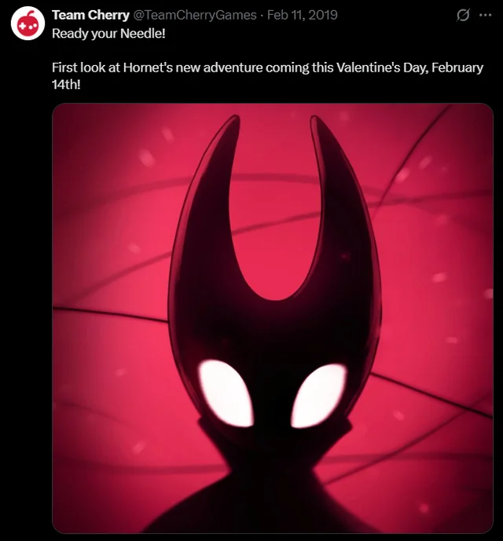
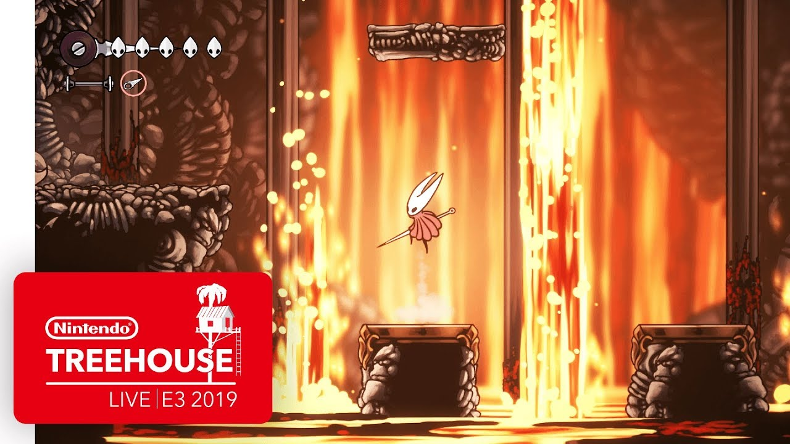
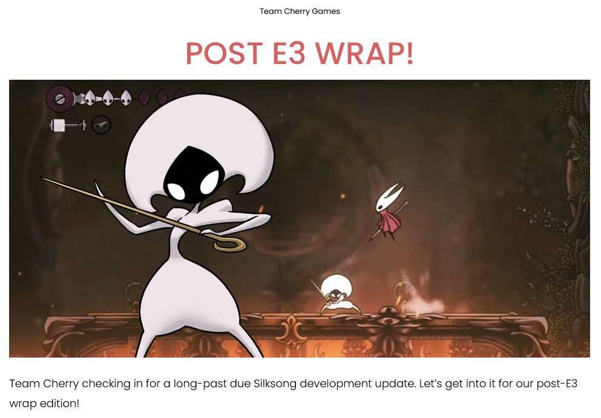
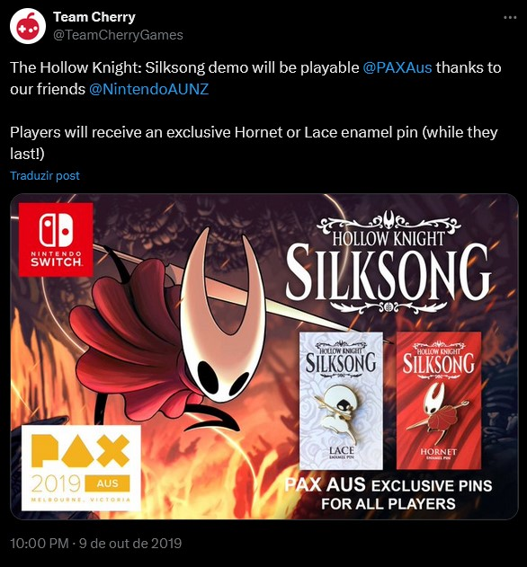

-The Teaser (Feb. 14,2019)

Це були перші новини зв'язані з Silksong, тоді ще ніхто не очікував що розробка затягнеться аж на 6 років
-Silksong steam page(Feb. 15,2019)

У сілксонга з'явилась сторінка в стімі з деякими кадрами з гри і покищо без дати релізу
silksong sample music track removed
(Feb. 16,2019)
На сайті Team Cherry був саундтрек сілксонга але по якійсь причині його видалили
-Late anniversary celebration (March. 19,2019)

Це було святкування 2 річниці гри, на ньому показали творчість фанатів і розказали про чеяких персонажів сілксонга
сама річниця
Nintendo "claims" that Silksong will release within the next fiscal year
(April. 26,2019)
Нінтендо стверджувє що Silksong вийде на їх ній платвормі протагом цього фінансового року. Ну звісно якщо Silksong вийде протягом цього фінансового року.
the Silksong apears on Nintendo direct of the E3 2019
(June. 11,2019)
Silksong зявився на нінтендо директ з парою секунд геймплея. нінтендо директ
Silksong Demo playable in the Nintendo Switch section of E3 2019
(June. 12,2019)
Нам дали пограти в демку силксонга.
відео демки
-Silksong Demo uploaded on the official Nintendo youtube channel (June. 13,2019)

на фіціальному каналі нінтендо з'явився запис демки Silksongзапис
- Team Cherry posts Post E3 Wrap (June. 25,2019)

team cherry запостили те що демка силксонга птрапила на nintend direct E3 і вся 3 дні івента можна було пограти в неї.пост
A steam bug show us silksong release date. It was 12 June 2020
(Sep. 18,2019)
- Silksong Demo playable in Pax Australia announced

Silksong Steam page updated with new assets
(June. 12,2019)
на сторінці стіму силксонга з'явилось більше ассетів.
- Team Cherry posts Holiday Sign off (June. 13,2019)
.jpg)
Team Cherry виклали новорічний пост де показали деяких жуків, саундтреки і мерч.пост